건축기사 (2017-05-09 기출문제)
1과목: 건축계획
1. 백화점의 진열장 배치에 관한 설명으로 옳지 않은 것은?
- 직각배치는 매장 면적의 이용률을 최대로 확보할 수 있다.
- 사행배치는 주통로 이외의 제2통로를 상하교통계를 향해서 45° 사선으로 배치한 것이다.
- 사행배치는 많은 고객이 매장구석까지 가기 쉬운 이점이 있으나 이행의 진열장이 필요하다.
- 자유유선 배치는 확일성을 탈피할 수 있으며, 변화와 개성을 추구할 수 있고 시설비가 적게든다.
(정답률: 81%)

2. 다음의 주요 사례에서 전시공간의 융통성을 가장 많이 부여하고 있는 것은?
- 과천 현대 미술관
- 파리 퐁피두 센터
- 파리 루브르 박물관
- 뉴욕 구겐하임 미술관
(정답률: 81%)
3. 극장의 프로시니엄에 관한 설명으로 옳은 것은?
- 무대배경용 벽을 말하며 쿠펠 호리존트라고도 한다.
- 조명기구나 사이크로라마를 설치한 연기부분 무대의 후면 부분을 일컫는다.
- 무대의 천장 밑에 설치되는 것으로 배경이나 조명기구 등을 매다는데 사용된다.
- 그림에 있어서 액자와 같이 관객의 시선을 무대에 쏠리게 하는 시각적 효과를 갖는다.
(정답률: 78%)
4. 백화점 계획에서 매장 부분의 외관을 무창으로 하는 이유로 옳지 않은 것은?
- 실내의 조도를 일정하게 하기 위해서
- 벽면에 상품 전시공간을 확보하기 위해서
- 인접건물의 화재시 백화점으로의 인화를 방지하기 위해서
- 창으로부터의 역광이 없도록 하여 디스플레이(display)를 유리하게 하기 위해서
(정답률: 83%)
5. 능률적인 작업용량으로서 10만 권을 수장할 도서관 서고의 면적으로 가장 알맞은 것은?
- 350m2
- 500m2
- 800m2
- 950m2
(정답률: 89%)
6. 병원건축의 병동배치형식 중 집중식(block type)에 관한 설명으로 옳지 않은 것은?
- 재난 시 환자의 피난이 용이하다.
- 병동에서의 조망을 확보할 수 있다.
- 대지를 효과적으로 이용할 수 있다.
- 공조설비가 필요하게 되어 설비비가 높다.
(정답률: 77%)
7. 사무소 건축에서 엘리베이터 계획 시 고려사항으로 옳지 않은 것은?
- 수량 계산 시 대상 건축물의 교통수요량에 적합해야한다.
- 승객의 층별 대기시간은 평균 운전간격 이상이 되게 한다.
- 군 관리 운전의 경우 동일 군내의 서비스 층은 같게 한다.
- 초고층, 대규모 빌딩인 경우는 서비스 그룹을 분할(조닝)하는 것을 검토한다.
(정답률: 89%)
8. 다음의 건축물과 양식의 연결이 옳지 않은 것은?
- 판테온 - 로마 양식
- 파르테논 신전 - 그리스 양식
- 성 소피아 성당 - 비잔틴 양식
- 노트르담 성당 - 로마네스크 양식
(정답률: 66%)
9. 일반주택의 동선계획에 관한 설명으로 옳지 않은 것은?
- 하중이 큰 가사노동의 동선은 길게 처리한다.
- 동선에는 공간이 필요하고 가구를 둘 수 없다.
- 일반적으로 동선의 3요소라 함은 속도,빈도,하중을 의미한다.
- 개인, 사회, 가사노동권의 3개 동선은 서로 분리하는 것이 바람직하다.
(정답률: 90%)
10. 아파트의 평면형식 중 계단실 형에 관한 설명으로 옳은 것은?
- 대지에 관한 이용률이 가장 높은 유형이다.
- 동행을 위한 공용 면적이 크므로 건물의 이용도가 낮다.
- 각 세대가 양쪽으로 개구부를 계획할 수 있는 관계로 통풍이 양호하다.
- 엘리베이터를 공용으로 사용하는 세대가 많으므로 엘리베이터의 효율이 높다.
(정답률: 72%)
11. 주거단지의 도로형식에 관한 설명으로 옳지 않은 것은?
- 격자형은 가로망의 형태가 단순·명료하고, 가구 및 확지 구성상 택지의 이용효율이 높다.
- 쿨데삭(Cul-de-sac)형은 각 가구와 관계없는 자동차의 진입을 방지할 수 있다는 장점이 있다.
- 루프(Loop)형은 우회도로가 없는 쿨데삭형의 결점을 개량하여 만든 패턴으로 도로율이 높아지는 단점이 있다.
- T자형 도로의 교차방식을 주로 T자 교차로한 형태로 통행거리가 짧아 보행자 전용도로와 병용이 불필요하다.
(정답률: 77%)
12. 한국건축에 관한 설명으로 옳지 않은 것은?
- 대부분의 한국건축은 인간적 척도 개념을 나타내는 특징이 있다.
- 기둥의 안쏠림으로 건축의 외관에 시지각적인 안정감을 느끼게 하였다.
- 한국건축은 서양건축과 달린 박공면이 정면이 되고 지붕면이 측면이 된다.
- 한국건축은 공간의 위계성이 있어 각 공간의 관계가 주(主)와 종(從)의 관계를 갖는다.
(정답률: 78%)
13. 초기 기독교 시기의 바실라카 양식의 본당의 평면도에서 회랑의 중앙부분을 나타내는 용어는?
- 아일(Aisle)
- 네이브(Nave)
- 아트리움(Atrium)
- 페디먼트(Pediment)
(정답률: 66%)
14. 극장에서 인형극이나 아동극 및 연극과 같이 배우의 표정과 동작을 자세히 감상할 필요가 있는 공연에 적한 가시거리의 한계는?
- 10m
- 15m
- 22m
- 38m
(정답률: 87%)
15. 호텔 건축에 관한 설명으로 옳은 것은?
- 호텔의 동선에서 물품동선과 고객동선은 교차시키는 것이 좋다.
- 프런트 오피스는 수평동선이 수직동선으로 전이되는 공간이다.
- 현관은 퍼블릭 스페이스의 중심으로 로비, 라운지와 분리하지 않고 통합시킨다.
- 주식당은 숙박객 및 외래객을 대상으로 하여, 외래객이 편리하게 이용할 수 있도록 출입구를 별도로 설치하는 것이 좋다.
(정답률: 79%)
16. 건축공간의 치수계획에서 “압박감을 느끼지 않을 만큼의 천장 높이 결정”은 다음 중 어디에 해당하는가?
- 물리적 스케일
- 생리적 스케일
- 심리적 스케일
- 입면적 스케일
(정답률: 91%)
17. 공장건축의 레이아웃(layout)에 관한 설명으로 옳지 않은 것은?
- 제품 중심의 레이아웃은 대량생산에 유리하여 생산성이 높다.
- 레이아웃은 장래 공장 규모의 변화에 대응한 융통성이 있어야 한다.
- 공정중심의 레이아웃은 다품종 소량생산이나 주문생산에 적합한 형식이다.
- 고정식 레이아웃은 기능이 동일하거나 유사한 공정, 기계를 접합하여 배치하는 방식이다.
(정답률: 79%)
18. 2층 단독주택에서 1층에 부모가, 2층에 자녀들이 거주할 경우 가족의 단란에 가장 영향을 줄 수 있는 요소는?
- 계단의 배치
- 침실의 방위
- 건물의 층고
- 식당과 부엌의 연결방법
(정답률: 86%)
19. 학교운영방시 중 플래툰 형에 관한 설명으로 옳은 것은?
- 교실수는 학급수와 동일하다.
- 초등학교 저학년에 가장 적합한 형식이다.
- 교과 담임제와 학급 담임제를 병용할 수 있는 형식이다.
- 모든 교실이 특정한 교과 수업을 위해 만들어진 형식으로, 일반교실은 없다.
(정답률: 73%)
20. 사무소 건축의 기준층 평면형태 결정요소와 가장 거리가 먼 것은?
- 방화구획상 면적
- 구조상 스팬의 한도
- 대피상 최소 피난거리
- 덕트, 배선, 배관 등 설비 시스템상의 한계
(정답률: 54%)
2과목: 건축시공
21. 공사현장의 가설건축물에 관한 설명으로 옳지 않은 것은?
- 하도급자 사무실은 후속공정에 지장이 없는 현장사무실과 가까운 곳에 둔다.
- 시멘트 창고는 통풍이 되지 않도록 출입구 이외는 개구부 설치를 금하고, 벽, 천장, 바닥에는 방수, 방습처리한다.
- 변전소는 안전상 현장사무실에서 가능한 멀리 위치한다.
- 인화성 재료저장소는 벽, 지붕, 천장의 재료를 방화구조 또는 불연구조로 하고 소화설비를 갖춘다.
(정답률: 84%)
22. 페인트칠의 경우 초벌과 재벌 등을 도장할 때마다 색을 약간씩 다르게 하는 주된 이유는?
- 희망하는 색을 얻기 위하여
- 색이 진하게 되는 것을 방지하기 위하여
- 착색안료를 낭비하지 않고 경제적으로 사용하기 위하여
- 초벌, 재벌 등 페인트칠 횟수를 구별하기 위해서
(정답률: 88%)
23. 건설공사 기획부터 설계, 입찰 및 구매, 시공, 유지관리의 전 단계에 있어 업무절차의 전자화를 추구하는 종합건설정보망체계를 의미하는 것은?
- CALS
- BIM
- SCM
- B2B
(정답률: 82%)
24. 지질조사를 통한 주상도에서 나타나는 정보가 아닌 것은?
- N치
- 투수계수
- 토층별 두께
- 토층의 구성
(정답률: 68%)
25. 목재에 사용하는 방부재에 해당하지 않는 것은?
- 크레오소트 유(Creosote oil)
- 콜타르(Coal tar)
- 카세인(Casein)
- P.C.P(Penta Chloro Phenol)
(정답률: 60%)
26. 철골부재용접 시 겹침이용, T자이용 등에 사용되는 용접으로 목두께의 방향이 모재의 면과 45° 또는 거의 45°의 각을 이루는 것은?
- 완전용입 맞댐용접
- 모살용접
- 부분용입 맞댐용접
- 다층용접
(정답률: 87%)
27. 실비정산보수가산계약 제도의 특징이 아닌 것은?
- 설계와 시공의 중첩이 가능한 단계별 시공이 가능하다.
- 복잡한 변경이 예상되거나 긴급을 요하는 공사에 적합하다.
- 계약체결시 공사비용의 최대값을 정하는 최대보증한도 실비정산보수가산계약이 일반적으로 사용된다.
- 공사금액을 구성하는 물량 또는 단위공사 부분에 대한 단가만을 확정하고 공사 완료시 실시수량의 확정에 따라 정산하는 방식이다.
(정답률: 63%)
28. 특수콘크리트 공사에 관한 설명으로 옳지 않은 것은?
- 하루의 평균기온이 4°C 이하가 예상되는 조건일 때 한중콘크리트로 시공한다.
- 하루의 평균기온이 25°C를 초과하는 것이 예상되는 경우 서중콘크리트로 시공한다.
- 매스콘크리트로 다루어야 할 하단이 구속된 벽조의 경우 두께 0.8m 이상으로 한다.
- 섬유보강 콘크리트의 시공은 품질이 얻어지도록 재료, 배합, 비비기 설비 등에 대하여 충분히 고려한다.
(정답률: 65%)
29. 건설클레임과 분쟁에 관한 설명으로 옳지 않은 것은?
- 클레임의 예방대책으로는 프로젝트의 모든 단계에서 시공의 기술과 경험을 이용한 시공성 검토가 있다.
- 작업범위 관련 클레임은 주로 예상치 못했던 지하구조물의 출현이나 지반 형태로 인해 시공자가 작업 수행을 위해 입찰 시 책정된 예정 가격을 초과 부담해야 할 경우에 발생한다.
- 분쟁은 발주자와 계약자의 상호 이견 발생 시 조정, 중재, 소송의 개념으로 진행되는 것이다.
- 클레임의 접근절차는 사전평가단계, 근거자료확보단계, 자료분석단계, 문서작성단계, 청구금액산출단계, 문서제출단계 등으로 진행된다.
(정답률: 68%)
30. 블록조 벽체에 와이어메시를 가로줄눈에 묻어 쌓기도 하는데 이에 관한 설명 중 옳지 않은 것은?
- 전단작용에 대한 보강이다.
- 수직하중을 분산시키는데 유리하다.
- 블록과 모르타르의 부착성능의 증진을 위한 것이다.
- 교차부의 균열을 방지하는데 유리하다.
(정답률: 76%)
31. 콘크리트의 크리프에 관한 설명으로 옳지 않은 것은?
- 습도가 높을수록 크리프는 크다.
- 물-시멘트 비가 클수록 크리프는 크다.
- 콘크리트의 배합과 골재의 종류는 크리프에 영향을 끼친다.
- 하중이 제거되면 크리프 변형은 일부 회복된다.
(정답률: 65%)
32. 건축물에 사용되는 금속제품과 그 용도가 바르게 연결되지 않은 것은?
- 피벗 : 문의 하부 발이 닿는 부분에 대하여 문짝이 손상되는 것을 방지하는 철물
- 코너비드：벽, 기둥 등의 모서리에 대는 보호용 철물
- 논슬립：계단에 사용하는 미끄럼 방지 철물
- 조이너 : 천장, 벽 등의 이음새 감추기용 철물
(정답률: 68%)
33. 건축물 외벽공사 중 커튼월 공사의 특징으로 옳지 않은 것은?
- 외벽의 경량화
- 공업화 제품에 따른 품질 제고
- 가설비계의 증가
- 공기단축
(정답률: 85%)
34. 콘크리트에 사용되는 혼화재 중 플라이애시의 사용에 따른 이점으로 볼 수 없는 것은?
- 유동성의 개선
- 초기강도의 증진
- 수화열의 감소
- 수밀성의 향상
(정답률: 76%)
35. 방수 공사에서 안방수와 바깥방수를 비교한 설명으로 옳지 않은 것은?
- 바탕 만들기에서 안방수는 따로 만들 필요가 없으나 바깥방수는 따로 만들어야한다.
- 경제성(공사비)에서는 안방수는 비교적 저렴한 편인 방면 바깥방수는 고가인 편이다.
- 공사시기에서 안방수는 본공사에 선행해야 하나 바깥방수는 자유로이 선택할 수 있다.
- 안방수는 바깥방수에 비해 시공이 간편하다.
(정답률: 73%)
36. 벽돌벽에서 장식적으로 구멍을 내어 쌓는 벽돌쌓기 방식은?
- 불식쌓기
- 영롱쌓기
- 무늬쌓기
- 층단떼어쌓기
(정답률: 76%)
37. 시멘트 액체방수에 관한 설명으로 옳은 것은?
- 모체 표면에 시멘트 방수제를 도포하고 방수모르타르를 덧발라 방수층을 형성하는 공법이다.
- 구조체 균열에 대한 저항성이 매우 우수하다.
- 시공은 바탕처리→ 혼합→ 바르기→ 지수→ 마무리 순으로 진행된다.
- 시공 시 방수층의 부착력을 위하여 방수할 콘크리트 바탕면은 충분히 건조시키는 것이 좋다.
(정답률: 49%)
38. 고층건축물 공사의 반복작업에서 각 작업조의 생산성을 기울기로 하는 직선으로 각 반복작업의 진행을 표시하여 전체공사를 도식화 하는 기법은?
- CPM
- PERT
- PDM
- LOB
(정답률: 70%)
39. 토공사에 적용되는 체적환산계수 L의 정의로 옳은 것은?
- 흐트러진 상태의 체적(m2), 자연상태의 체적(m2)
- 흐트러진 상태의 체적(m2), 다져진 상태의 체적(m2)
- 다져진 상태의 체적(m2), 자연상태의 체적(m2)
- 자연상태의 체적(m2), 다져진 상태의 체적(m2)
(정답률: 69%)
40. 건축재료의 수량 산출시 적용하는 함증률이 옳지 않은 것은?
- 유리 : 1%
- 단열재 : 5%
- 붉은벽돌 : 3%
- 이형철근 : 3%
(정답률: 76%)
3과목: 건축구조
41. 다음 그림과 같은 단순보에 변등분포 하중이 작용할 때 전단력이 ‘0’이 되는 점에 대하여 A점으로부터의 거리를 구하면?
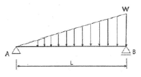
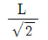
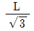
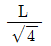
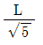
(정답률: 68%)
42. 그림과 같은 보에서 A점에서 200kN m의 모멘트가 작용하였을 때 B점이 지지하는 모멘트 및 수직반력은?
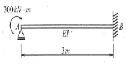
- MA= 200kN · m, VB= 100kN
- MBA 200kN · m, VB = 50 kN
- MBA=100kN · m, VB = 100kN
- MBA=100kN · m, VB = 50kN
(정답률: 51%)
43. 다음 구조물의 부정정 차수의 합은?
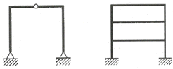
- 9
- 10
- 11
- 12
(정답률: 64%)
44. 부등침하의 원인과 거리가 먼 것은?
- 건물이 경사지반에 근접되어 있을 경우
- 건물이 이질지반에 걸쳐 있을 경우
- 이질의 기초구조를 적용했을 경우
- 건물의 강도가 불균등할 경우
(정답률: 56%)
45. 그림과 같은 보에서 C점의 처짐은? (단, I는 전 경간에 걸쳐 일정하다.)
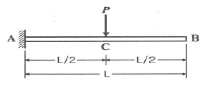
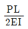
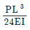
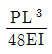
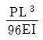
(정답률: 56%)
46. 1방향 철근콘크리트 슬래브에서 철근의 설계기준항복강도가 500MPa인 경우 콘크리트 전체 단면적에 대한 수축·온도 철근비는 최소 얼마 이상이어야 하는가? (단, KCI2012기준, 이형철근 사용)
- 0.0015
- 0.0016
- 0.0018
- 0.0020
(정답률: 47%)
47. 그림과 같은 부정정 라멘에서 A점의 MB는?(오류 신고가 접수된 문제입니다. 반드시 정답과 해설을 확인하시기 바랍니다.)
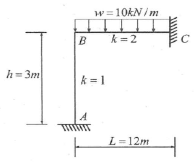
- 0kN·m
- 20kN·m
- 40kN·m
- 60kN·m
(정답률: 55%)
48. 고력볼트 F10T(M20) 1면전단 일 때 볼트 한 개당 설계전단강도(øRu)를 구하면? (단, 고력볼트의 Fu = 1000MPa, ø=0.75, Fnu =0.5Fu임)
- 117.8kN
- 94.2kN
- 58.8kN
- 47.1kN
(정답률: 55%)
49. 강구조에서 규정된 별되의 설계하중이 없는 경우 접합부의 최소 설계강도 기준은? (단, 연결재, 새그로드 또는 띠장은 제외)
- 30kN 이상
- 35kN 이상
- 40kN 이상
- 45kN 이상
(정답률: 47%)
50. 그림과 같은 강재가 전단력을 받아 점선과 같이 변형되었을 때 이강재의 전단변형률은?
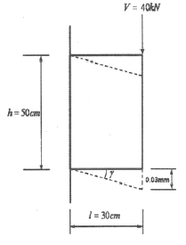
- 0.00006 rad
- 0.0001 rad
- 0.00125 rad
- 0.00075 rad
(정답률: 59%)
51. 강구조 필릿용접에 관한 설명으로 옳지 않은 것은?(오류 신고가 접수된 문제입니다. 반드시 정답과 해설을 확인하시기 바랍니다.)
- 필릿용접의 유효면적은 유효길이에 유효목두께를 곱한 것으로 한다.
- 필릿용접의 유효길이는 필릿용접의 총길이에서 2배의 필릿사이즈를 공제한 값으로 하여야 한다.
- 필릿용접의 유효목두께는 용접루트로부터 용접표면까지의 최단거리로 한다. 단, 이음면이 직각인 경우에는 필릿사이즈의 배로 한다.
- 구멍필릿과 슬롯필릿용접의 유효길이는 목두께의 중심을 잇는 용접중심선의 길이로 한다.
(정답률: 52%)
52. f=400MPa 이형철근을 사용한 경우 필요한 철근 인장정착길이가 1000mm이었다. 철근의 강도를 fy=500MPa로 변경하고, 소요철근보다 1.25배 많게 철근을 배근하였을 경우 변경된 철근의 인장정착길이는 얼마인가?
- 750mm
- 1000mm
- 1200mm
- 1500mm
(정답률: 55%)
53. 강도설계법에서 고정하중 40kN, 활하중 30kN이 작용할 때 계수하중은 얼마인가?
- 135kN
- 124kN
- 116kN
- 96kN
(정답률: 66%)
54. 철근콘크리트 단근보를 강도설계법으로 설계시 콘크리트의 전압축력으로 옳은 것은? (단, fk=24MPa, 보의 폭 300mm, 응력볼트의 깊이 110mm)(오류 신고가 접수된 문제입니다. 반드시 정답과 해설을 확인하시기 바랍니다.)
- 750.6kN
- 724.4kN
- 673.2kN
- 650.8kN
(정답률: 44%)
55. 건축구조기준에 따른 우리나라 지진구역 및 이에 따른 지진구역계수 값이 옳게 연결된 것은?(관련 규정 개정전 문제로 여기서는 기존 정답인 1번을 누르면 정답 처리됩니다. 자세한 내용은 해설을 참고하세요.)
- 지진구역 I : 0.22g, 지진구역 II : 0.14g
- 지진구역 I : 0.17g, 지진구역 II : 0.11g
- 지진구역 I : 0.11g, 지진구역 II : 0.17g
- 지진구역 I : 0.14g, 지진구역 II : 0.22g
(정답률: 62%)
56. 건축구조별 특징에 관한 설명 중 옳지 않은 것은?
- 가구식 구조는 삼각형보다 사각형으로 조립하면 안정한 구조체를 이룰수 있다.
- 조적식 구조는 압축력에는 강하지만 횡력에 취약하다.
- 조립식 구조는 부재를 공장에서 생산·가공하여 현장에서 조립하므로 공기가 짧다.
- 일체식 구조는 비교적 균일한 강도를 가진다.
(정답률: 71%)
57. 단근보에서 하중이 재하됨에 동시에 순간처짐이 20mm가 발생되었다. 이 하중이 5년이상 지속되는 경우 총 처짐량은 얼마인가? (단,
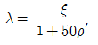
이고 지속하중에 의한 시간경과계수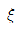
는 2이다.)- 30mm
- 40mm
- 60mm
- 80mm
(정답률: 55%)
58. 그림과 같은 하중을 지지하는 단주의 단면에서 인장력을 발생시키지 않는 거리 x의 한계는?
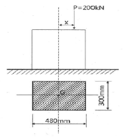
- 40mm
- 60mm
- 80mm
- 100mm
(정답률: 49%)
59. 그림과 같은 구조에서 기둥에 압축력만 발생하게 하려면 A점에서 내민 부재길이 x의 값은?
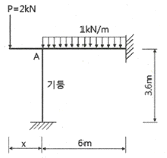
- 1m
- 1.5m
- 2m
- 3m
(정답률: 55%)
60. 다음 그림과 같은 보 단면에서 정착되는 철근의 수평 순간격을 구하면?
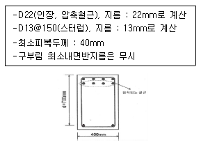
- 60.7mm
- 63.7mm
- 66.7mm
- 68.7mm
(정답률: 42%)
4과목: 건축설비
61. 다음의 스프링클러설비의 화재안전기준 내용 중 ( )안에 알맞은 것은?
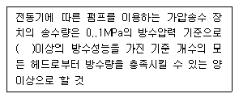
- 80l/min
- 90l/min
- 110l/min
- 130l/min
(정답률: 54%)
62. 3상 대칭 성형(Y)결선에서 상전압이 220[V]일 때 선간전압은 얼마인가?
- 110[V]
- 220[V]
- 380[V]
- 440[V]
(정답률: 60%)
63. 공기조화기 설계에서 사용되는 바이패스 팩터(bypass factor)의 의미로 옳은 것은?
- 급기팬을 통과하는 공기 중 건공기의 비율
- 공기조화기의 도입외기가 환기(return air)의 비율
- 실내로부터의 환기(return air)중 공기조화기로 도입되는 공기의 비율
- 냉온수코일의 통과 공기 중 냉온수코일과 접촉하지 않고 통과하는 공기의 비율
(정답률: 65%)
64. 다음과 같은 조건에 있는 실의 틈새바람에 의한 현열 부하량은?
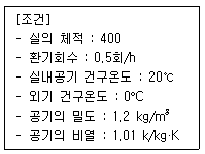
- 986W
- 1124W
- 1347W
- 1542W
(정답률: 66%)
65. 인터폰설비의 통화망 구성 방시에 속하지 않는 것은?
- 모자식
- 상호식
- 복합식
- 프레스토크식
(정답률: 65%)
66. 공기조화방식 중 전공기방식에 속하는 것은?
- 패키지 방식
- 이중덕트 방식
- 유인유닛 방식
- 팬코일유닛 방식
(정답률: 67%)
67. 압력탱크 급수방식에 관한 설명으로 옳지 않은 것은?
- 정전시 급수가 곤란하다.
- 급수 압력을 일정하게 유지할 수 있다.
- 단수 시 저수조의 물을 사용 할 수 있다.
- 탱크를 높은 곳에 설치하지 않아도 된다.
(정답률: 62%)
68. 3상 유도전동기의 속도제어 방법으로 옳지 않은 것은?
- 인버터를 사용하여 주파수를 변화시킨다.
- 2선의 접속을 바꿔 회전자계의 방향이 반대로 되도록 한다.
- 회전자에 접속되어 있는 저항을 변화시켜 비례추이의 원리로 제어한다.
- 독립된 2조의 극수가 서로 다른 고정자 권선을 감아 놓고 필요에 따라 극수를 선택하여 극수를 변화시킨다.
(정답률: 54%)
69. 건구온도 30°C, 상대습도 60%인 공기를 냉수 코일에 통과시켰을 때 공기의 상태변화로 옳은 것은? (단, 코일 입구 수온 5°C, 코일 출구수온 10°C)
- 건구온도는 낮아지고 절대습도는 높아진다.
- 건구온도는 높아지고 절대습도는 낮아진다.
- 건구온도는 높아지고 상대습도는 높아진다.
- 건구온도는 낮아지고 상대습도는 높아진다.
(정답률: 71%)
70. 간접가열식 급탕방식에 관한 설명으로 옳지 않은 것은?
- 저압보일러를 써도 되는 경우가 많다.
- 직접가열식에 비해 소규모 급탕설비에 적합하다.
- 급탕용 보일러는 난방용 보일러와 겸용할 수 있다.
- 직접가열식에 비해 보일러 내면에 스케일이 발생할 염려가 적다.
(정답률: 67%)
71. 증기난방에 관한 설명으로 옳지 않은 것은?
- 계통별 용량제어가 곤란하다.
- 한랭지에서 동결의 우려가 적다.
- 예열시간이 온수난방에 비하여 짧다.
- 부하변동에 따른 실내방열량의 제어가 용이하다.
(정답률: 77%)
72. 실내열환경 지표 중 공기의 습도가 고려되지 않은 것은?
- 작용온도
- 유효온도
- 등온지수
- 신유효지수
(정답률: 43%)
73. 주택의 1인 1일 오수량이 0.⑤ /인·일이고 오수의 BOD 농도가 260g/m3 일 때 1인 1일당 BOD 부하량은?
- 5g/인·일
- 13g/인·일
- 26g/인·일
- 50g/인·일
(정답률: 75%)
74. 조명기구를 배광에 따라 분류할 경우, 다음과 같은 특징을 갖는 것은?
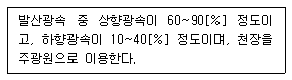
- 직접조명기구
- 반직접조명기구
- 반간접조명기구
- 전반확산조명기구
(정답률: 70%)
75. 유체의 흐름을 한 방향으로만 흐르게 하고 반대방향으로는 흐르지 못하게 하는 밸브는?
- 콕
- 체크밸브
- 게이트밸브
- 글로브밸브
(정답률: 70%)
76. 펌프에서 발생하는 공동현상(Cavitation)의 방지 대책으로 가장 알맞은 것은?
- 펌프의 설치위치를 높인다.
- 펌프의 흡입양정을 낮춘다.
- 펌프의 토출양정을 높인다.
- 펌프의 토출구경을 확대한다.
(정답률: 58%)
77. 엘리베이터의 안전장치 중에서 카가 최상층이나 최하층에서 정상 운행위치를 벗어나 그 이상으로 운행하는 것을 방지하는 것은?
- 완충기(bufer)
- 조속기(governor)
- 리미트 스위치(limit switch)
- 카운터 웨이트(counter weight)
(정답률: 83%)
78. 옥내배선의 전선 굵기 결정 요소에 속하지 않는 것은?
- 허용 전류
- 배선 방식
- 전압 강하
- 기계적 강도
(정답률: 59%)
79. 가스설비에 사용되는 거버너(governor)에 관한 설명으로 옳은 것은?
- 실내에서 발생되는 배기가스를 외부로 배출시키는 장치
- 연소가 원활히 이루어지도록 외부로부터 공기를 받아들이는 장치
- 가스가 누설되거나 지진이 발생했을 때 가스 공급을 긴급히 차단하는 장치
- 가스공급회사로부터 공급받은 가스를 건물에서 사용하기에 적합한 압력으로 조정하는 장치
(정답률: 75%)
80. 일반적으로 실내 환기량의 기준이 되는 것은?
- 공기 온도
- O 농도
- CO2 농도
- SO2 농도
(정답률: 84%)
5과목: 건축법규
81. 국토의 계획 및 이용에 관한 법령상 제 2종 전용 주거지역안에서 건축 할 수 있는 건축물에 속하지 않은 것은?
- 공동주택
- 판매시설
- 노유자시설
- 교육연구시설 중 고등학교
(정답률: 55%)
82. 같은 건축물안에 공동주택과 위락시설을 함께 설치하고자 하는 경우, 공동주택의 출입구와 위락시설의 출입구는 서로 그 보행거리가 최소 얼마 이상이 되도록 설치하여야 하는가?
- 10m
- 20m
- 30m
- 50m
(정답률: 63%)
83. 건축허가 대상 건축물이라 하더라도 건축신고를 하면 건축허가를 받은 것으로 보는 경우에 속하지 않는 것은? ( 단, 층수가 2층인 건축물의 경우)
- 바닥면적의 합계가 75m2의 증축
- 바닥면적의 합계가 75m2의 재축
- 바닥면적의 합계가 75m2의 개축
- 연면적의 합계가 250m2인 건축물의 대수선
(정답률: 71%)
84. 건축물에 설치하는 지하층의 구조 및 설비에 관한 기준 내용으로 옳지 않은 것은?
- 거실의 바닥면적의 합계가 1,000m2 이상인 층에는 환기설비를 설치 할 것
- 지하층의 바닥면적이 300m2 이상인 층에는 식수공급을 위한 급수전을 1개소 이상 설치 할 것
- 거실의 바닥면적이 30m2 이상인 층에는 직통계단 외에 피난층 또는 지상으로 통하는 비상탈출구 및 환기통을 설치할 것
- 바닥면적이 1,000 이상인 층에는 피난층 또는 지상으로 통하는 직통계단을 관련 규정에 의한 방화구획으로 구획되는 각 부분마다 1개소 이상 설치하되, 이를 피난계단 또는 특별피난계단의 구조로 할 것
(정답률: 63%)
85. 각 층의 바닥면적이 5,000m2이고 각 층의 거실 면적이 3,000m2인 14층 숙박시설에 설치하여야 하는 승용승강기의 최소 대수는? (단, 24인승 승용승강기를 설치하는 경우)
- 6대
- 7대
- 12대
- 13대
(정답률: 58%)
86. 도시지역에서 복합적인 토지이용을 증진시켜 도시 정비를 촉진하고 지역 거점을 육성할 필요가 있다고 인정되는 지역을 대상으로 지정하는 용도구역은?
- 개발제한구역
- 시가화조정구역
- 입지규제최소구역
- 도시자연공원구역
(정답률: 56%)
87. 다음 중 건축법령에 따른 용어의 정의가 옳지 않은 것은?
- 고층건축물이란 층수가 30층 이상이거나 높이가 120 이상인 건축물을 말한다.
- 리빌딩이란 건축물의 노후화를 억제하거나 기능향상 등을 위하여 대수선하거나 일부 증축하는 행위를 말한다.
- 지하층이란 건축물의 바닥이 지표면 아래에 있는 층으로서 바닥에서 지표면까지 평균높이가 해당 층 높이의 2분의 1 이상인 것을 말한다.
- 발코니란 건축물의 내부와 외부를 연결하는 완충공간으로서 전망이나 휴식 등의 목적으로 건축물 외벽에 접하여 부가적으로 설치되는 공간을 말한다.
(정답률: 74%)
88. 다음 중 국토의 계획 및 이용에 관한 법령에 따른 용도지역 안에서의 건폐율 최대한도가 가장 높은 것은?
- 준주거지역
- 중심상업지역
- 일반상업지역
- 유통상업지역
(정답률: 75%)
89. 국토의 계획 및 이용에 관한 법령에 따른 용도지구에 속하지 않는 것은?
- 경관지구
- 방재지구
- 시설보호지구
- 도시설계지구
(정답률: 49%)
90. 노상주차장의 구조 및 설비에 관한 기준 내용으로 옳은 것은?
- 너비 6m 이상의 도로에 설치하여서는 아니된다.
- 종단경사도가 3퍼센트를 초과하는 도로는 설치하여서는 아니된다.
- 고속도로, 자동차 전용도로 또는 고가도로에 설치하여서는 아니된다.
- 주차대수 규모가 20대인 경우, 장애인 전용주차 구획을 최소 2면 이상 설치하여야 한다.
(정답률: 58%)
91. 건축물의 연면적 중 주차장으로 사용되는 비율이 70퍼센트인 경우, 주차전용건축물로 볼 수 있는 주차장외의 용도에 속하지 않는 것은?
- 의료시설
- 운동시설
- 제1종 근린생활시설
- 제2종 근린생활시설
(정답률: 65%)
92. 다음은 일조 등의 확보를 위한 건축물의 높이 제한에 관한 기준 내용이다. ( ) 안에 알맞은 것은?
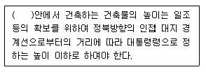
- 일반주거지역과 준주거지역
- 전용주거지역과 일반주거지역
- 중심상업지역과 일반상업지역
- 일반상업지역과 근린상업지역
(정답률: 76%)
93. 건축허가신청에 필요한 설계도서의 종류 중 건축계획서에 표시하여야 할 사항이 아닌 것은?
- 주차장규모
- 대지의 종·횡 단면도
- 건축물의 용도별 면적
- 지역·지구 및 도시계획사항
(정답률: 53%)
94. 다음의 부설주차장의 설치에 관한 기준 내용 중 밑줄 친 “대통령령으로 정하는 규모”로 옳은 것은?
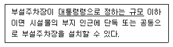
- 주차대수 100대의 규모
- 주차대수 200대의 규모
- 주차대수 300대의 규모
- 주차대수 400대의 규모
(정답률: 60%)
95. 급수, 배수, 환기, 난방 설비를 건축물에 설치하는 경우, 건축기계설비기술사 또는 공조냉동기계기술사의 협력을 받아야 하는 대상 건축물에 속하지 않는 것은?
- 아파트
- 연립주택
- 기숙사로서 해당 용도에 사용되는 바닥면적의 합계가 2,000m2인 건축물
- 업무시설로서 해당 용도에 사용되는 바닥면적의 합계가 2,000m2인 건축물
(정답률: 56%)
96. 다음의 피난계단의 설치에 관한 기준 내용 중 ( ) 안에 알맞은 것은?
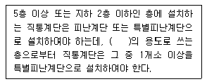
- 의료시설
- 숙박시설
- 판매시설
- 교육연구시설
(정답률: 57%)
97. 공작물을 축조할 때 특별자치시장·특별자치도지사 또는 시장·군수·구청장에게 신고를 하여야 하는 대상 공작물 기준으로 옳지 않은 것은?（단, 건축물과 분리하여 축조하는 경우)(2022년 02월 11일 개정된 규정 적용됨)
- 높이 2m를 넘는 옹벽
- 높이 4m를 넘는 광고탑
- 높이 6m를 넘는 장식탑
- 높이 6m를 넘는 굴뚝
(정답률: 66%)
98. 다음은 건축법령상 바닥면적 산정에 관한 기준 내용이다. ( )안에 포함되지 않는 것은?
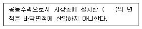
- 기계실
- 탁아소
- 조경시설
- 어린이놀이터
(정답률: 58%)
99. 건축법령상 공사 감리자가 수행하여야 하는 감리업무에 속하지 않는 것은?
- 공정표의 검토
- 상세시공도면의 작성 및 확인
- 공사현장에서의 안전관리의 지도
- 설계변경의 적정여부의 검토 및 확인
(정답률: 77%)
100. 건축물의 대지는 원칙적으로 최소 얼마 이상이 도로에 접하여야 하는가?
- 1m
- 2m
- 3m
- 4m
(정답률: 76%)